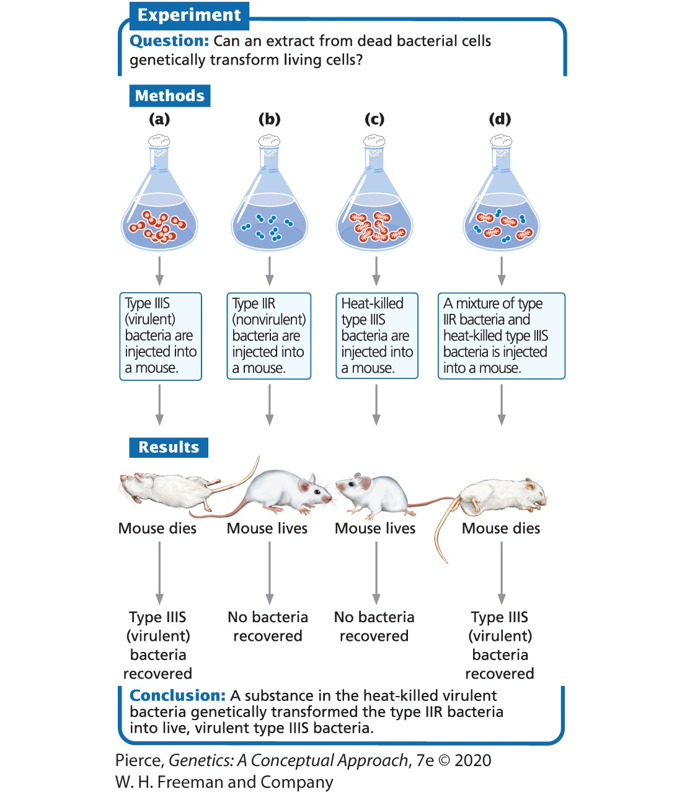
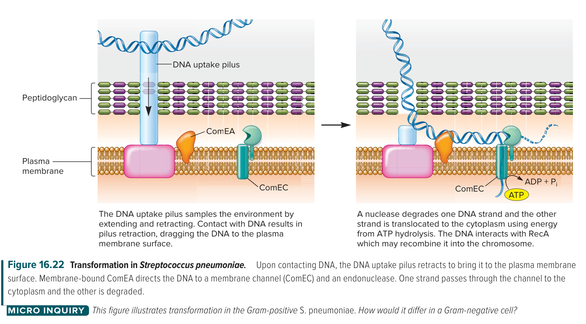
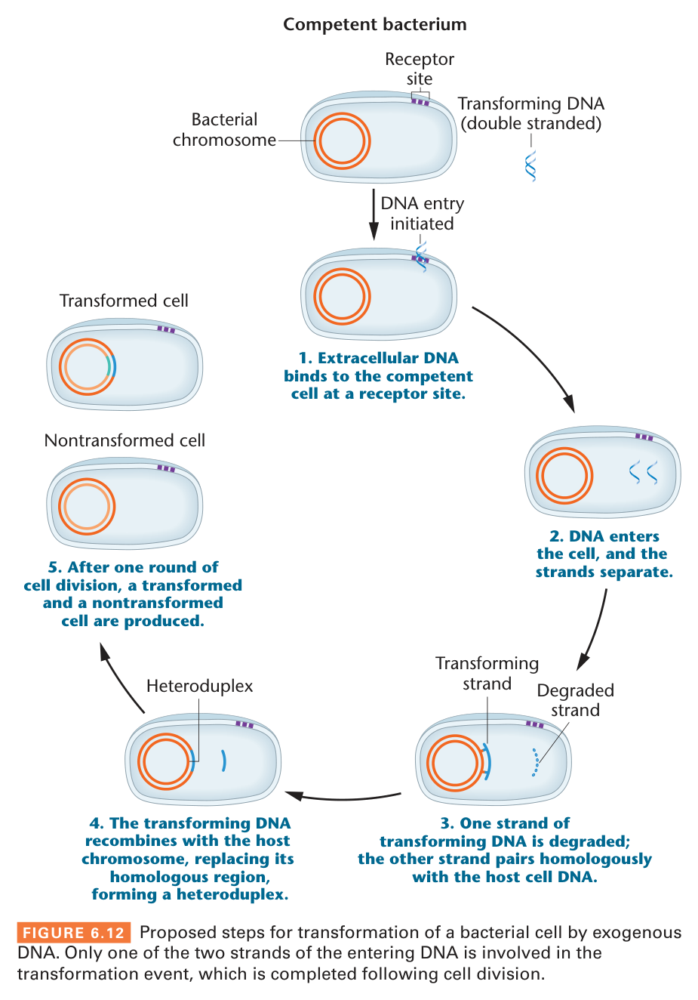
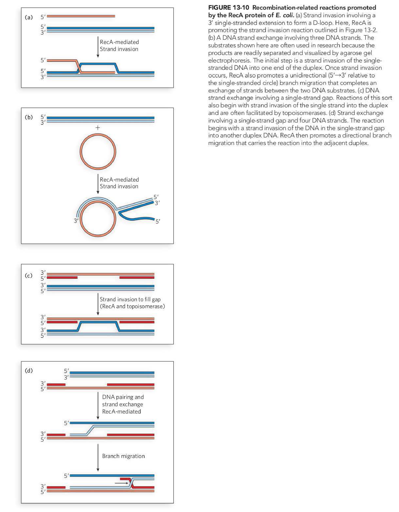

不是質體
Griffith／Avery 情境中，供體主要是死去 S 型菌釋出的染色體 DNA 片段。
釐清 4 個最容易混淆的問題：R 型菌為何仍有同源序列、細胞外核酸酵素由誰製造、雙股 DNA 如何變成單股，以及 RecA 如何把外來 DNA 併入染色體。
Griffith／Avery 情境中，供體主要是死去 S 型菌釋出的染色體 DNA 片段。
R 型是莢膜功能異常的突變株，仍和 S 型共享大量染色體序列。
雙股 DNA 並非拆成兩條完整單股；一股被降解，另一股經 ComEC 進入。
RecA 讓外來單股 DNA 尋找同源區、股侵入並形成局部異源雙股 DNA。
《Weaver Molecular Biology》把 R 型稱為「失去形成莢膜能力的肺炎鏈球菌突變株」；《Pierce Genetics》也說 S 型會偶爾突變成缺乏多醣外被的 R 型。換句話說，R 型不是另一種完全不同的細菌，而是莢膜相關功能出了問題。
“A certain mutant strain of S. pneumoniae has lost the ability to form a capsule.”Weaver, Molecular Biology, 5e, Ch. 2
Griffith 實際使用的是活 IIR 型受體與熱殺死 IIIS 型供體，最後回收到 IIIS 型菌。因此不能把它過度簡化成「同一個莢膜基因的小突變被修回」；它涉及不同莢膜型遺傳資訊的取得。

《Brooker Genetics》只稱它為「細胞外細菌內切核酸酵素」，沒有在該段指名細菌或酵素；但同節先說感受態受體細胞會表現 DNA 受體與攝取相關蛋白。《Prescott’s Microbiology》則把核酸酵素畫在受體菌的 ComEA、ComEC 攝取裝置旁。
研究顯示，EndA 在非感受態細胞中已分布於膜上；細胞進入感受態時，EndA 會被 ComEA 招募到 DNA 攝取位置。死去的 S 型供體負責釋出 DNA，活的 R 型受體則提供捕捉、加工與輸送裝置。

《Brooker》先描述細胞外內切核酸酵素在長 DNA 上偶爾隨機切割。這一步完成後，課文明確說片段仍是雙股 DNA。
接觸膜蛋白後，其中一股的磷酸二酯骨架被逐步水解；互補股則以單股形式穿過 ComEC。
“One of the DNA strands is degraded, and the other strand enters the bacterial cytoplasm via an uptake system.”Brooker, Genetics: Analysis and Principles, 8e, Ch. 7


肺炎鏈球菌轉形可直接確定的是：外來單股 DNA、RecA 同源搜尋、股侵入、局部股交換與異源雙股形成。經典 RecBCD—雙股斷裂修復、雙 Holliday junction、RuvABC 解析描述的是另一種重組脈絡，不能全部當成 Griffith 轉形的必經步驟。
第 2 章；R 型為失去莢膜形成能力的突變株，圖 2.1–2.2。
第 9、10 章；IIR＋IIIS 實驗、同源區配對與兩次互換，圖 9.15、10.3。
第 7 章；雙股片段切割、一股降解、異源雙股 DNA，圖 7.11。
第 16 章；DNA 攝取線毛、ComEA、ComEC 與核酸酵素，圖 16.22。
第 6 章；單股保留、同源配對、異源雙股及分裂後固定，圖 6.12。
第 13 章；RecA 核蛋白絲、股侵入與分支遷移，圖 13.9–13.10。
Midon et al., 2011；Bergé et al., 2013；Méjean & Claverys, 1993。
Ganaie et al., 2020：轉形株取得位於 dexB 與 aliA 之間的完整 cps 區域。